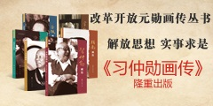
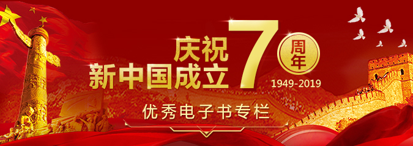
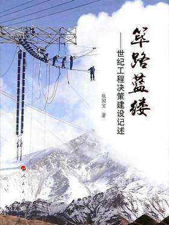
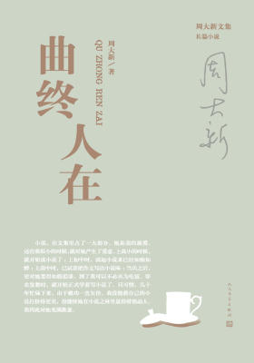
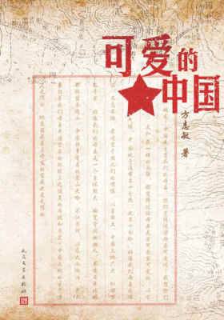
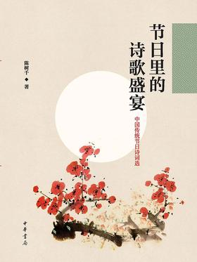
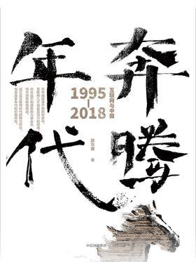
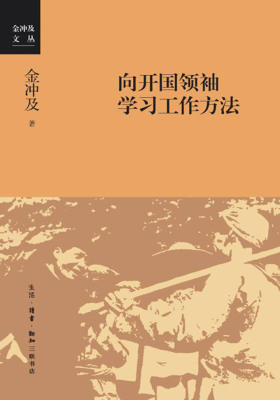
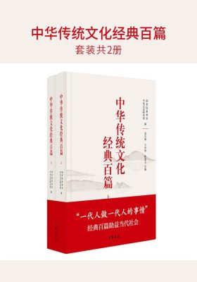

-
1阿迅（著名央视主持人朱迅的伤痛之作，令无数读者泪流满面）
著名主持人朱迅呕心两年写就随笔集，深情如《目送》，难忘如背影。 书中回忆自己从童星到清洁工、从“花瓶”到“花旦”、从癌症患者到“接盘侠”的成长经历，感人至深，又极为励志。用她的话说：“我曾遍身鳞伤，但伤口长出的却是翅膀。” 朱迅在布满荆棘的人生路上，先后送别了孤独的姥姥和多病的父亲，她以细腻的笔触告诉有缘阅读的人：人生是一场加一场的别离，和一程减一程的归乡。
-
2钱穆谈中国历史文化：中国历史精神
近代“史学四大家”之一，一代通儒钱穆经典作品，严谨与激情兼具，历史分析与现实关怀并重。高屋建瓴，多角度切入中国历史，揭示文明兴衰沉浮背后的历史命脉。黄仁宇、顾颉刚、余英时倾力推荐。
-
3天长地久：给美君的信（龙应台暌违十年重磅新作）
献给每一个跟时间赛跑的儿女。禁语行禅时，龙应台瞬间决定放下一切，回乡陪伴失智的母亲，开始写信。很快她发现：这个世界上，其实真正重要的事情并不多。
-
4愿为你赴一场前路不明的旅途
(也许义无反顾的结果并不如你所愿，但你一定会喜欢为了梦想一往无前的自己。人民日报/新华社/十点读书多次转载，治愈千万人胆怯焦虑的暖心文字。愿在不确定中前行的你一路风景，往后无惧，活出生命的所有可能！）
-
5我的京都（渡边淳一作品）
渡边淳一从少年时起就对京都有着无限的憧憬，成为作家后的他，又希望将这片浸润在日本传统文化中的土地作为自己小说的舞台。于是他将民风质朴的故乡北海道、现代化程度相当高的东京与京都做了对比，展现出京都与众不同的文化氛围与人文风情。清新隽永的京都旅居随笔，在向读者展示了京都特有的魅力的同时，表达了作者心中深深的京都情结。
-

费雯·丽：永远的乱世佳人
她是《乱世佳人》中美艳灵动，勇敢执著的郝思嘉，是《魂断蓝桥》中低眉浅笑，温柔娴雅的玛拉，是《欲望号街车》中灵魂扭曲，凄美绝望的布兰奇……她出演的每一部电影都是经典。英国前首相丘吉尔称赞她为“上帝的艺术品”。《悼词》赞她“没有一个电影演员在舞台上能像她一样杰出，没有一个戏剧演员在银幕上能像她那样光彩照人”。纽约*严厉的批评家之一沃尔特·克尔赞她为“王冠上的一颗明珠”。 本书以细腻的笔触，客观全面地向读者展示了影坛一代传奇费雯·丽精彩的一生。内附大量绝版精美照片，见证她超凡脱俗的美丽以及她在影史上的辉煌岁月。
文章阅读 -

成为becoming：米歇尔·奥巴马自传
米歇尔•奥巴马在书中首次公开描述了她的婚姻生活，尤其是她与贝拉克•奥巴马结婚的早些年，她是如何在丈夫政治生涯的快速上升期寻求职场与家庭间的平衡的。她向我们展露了他们二人关于贝拉克要不要参加美国总统竞选的私下争论，以及她在他竞选期间所扮演的既备受欢迎又饱受指责的角色。米歇尔以优雅、诙谐、坦率的口吻，为我们生动地讲述了她的家庭受到世界瞩目以及八年白宫生活的幕后故事。在此过程中，她更加深入地了解她的国家，而美国民众也逐渐了解她。
文章阅读 -

奥黛丽·赫本（新版·精装全彩典藏）
魅力女神传记，揭示出赫本的性格弱点和非凡勇气。 ——《纽约时报》 娱乐业内人士对传奇女演员进行了迷人的描述，用众多鲜为人知的私密细节诱惑读者无法释卷。 ——《今日美国》 八卦，当然了。不过斯伯特仍然非常尊敬赫本。 ——《娱乐周刊》 受人尊敬的名人传记作家唐纳德·斯伯特为独一无二的明星——奥黛丽·赫本创作了一幅完整而丰富的肖像画。 ——《今日纽约》 奥黛丽·赫本从不发脾气，从不认为自己是大牌，她在私下里和银幕上一样诚实、正直。斯伯特先生忠实地再现了她的特质
文章阅读 -

世纪初生
本书是夏伊勒三卷本回忆录的第一卷，另两卷是《噩梦年代：1930—1940》《旅人迟归：1945—1988》。 夏伊勒出生于世纪之交的美国中西部小镇，为了逃离那里的保守氛围，夏伊勒来到欧洲，找到了一份报社的工作。夏伊勒在伦敦报道温布尔登网球锦标赛，在巴黎报道林德伯格的跨大西洋飞行，在日内瓦报道国际联盟的会议。作为记录者，夏伊勒见证了菲茨杰拉德夫妇、海明威、格特鲁德·斯泰因、伊莎朵拉·邓肯等人的生活片段，有时自己也置身其中。对于大洋彼岸的故事——芝加哥的地下之王、“猴子审判”、风靡全美的“肖托夸集会”、哈定时代的丑闻等等，夏伊勒也娓娓道来。一幅欧美大陆世纪初生的画卷徐徐展开。
文章阅读 -
梁漱溟日记
梁漱溟（1893—1988），20世纪中国*独立风骨及知行合一的思想家、社会实践者。原名焕鼎，字寿铭，又字漱冥，后以漱溟行世。早岁信佛而后归儒，亦不废佛；以中学学历而执教北京大学。壮年辞去教职，长期从事乡村建设；发起民盟，为调停国共奔走呼号。1949年后屡受批判而始终不屈，傲然宣称“三军可夺帅也，匹夫不可夺志”。一生以“认识老中国，建设新中国”相号召，在两个问题上追求不已：一是人生问题，即人为什么活着；二是社会问题，亦可云中国问题，即中国向何处去。主要作品有《东西文化及其哲学》、《乡村建设理论》、《中国文化要义》、《人心与人生》等。
文章阅读 -

习仲勋画传（改革开放元勋画传丛书）
本书以时间为序选取了习仲勋同志多彩人生画卷中的39个典型事迹，生动表现了习仲勋同志在革命、建设尤其是改革开放时期的多个精彩瞬间，展现了一位无产阶级革命家为民族独立和国家富强冲锋在革命、建设、改革前沿的光辉形象。第1—32节叙述了习仲勋同志自少年时代起投身革命，在革命和建设中英勇奋斗的片断；第33—39节讲述了习仲勋同志在邓小平等人指导下勇于破除思想藩篱冲锋在改革前沿，为探索改革开放、推动经济特区建设、发展及相关改革而奔走、实践的光辉业绩。全书通过丰富、生动的事例突出习仲勋同志在革命、建设和改革开放各时期披荆斩棘不断取得新成就的历史画卷，同时配以大量珍贵的历史图片来使这个画卷更加丰满生动。
文章阅读

-
【顶】阳谋天下刘伯温
-
【顶】希特勒的兴亡（《第三帝国的兴亡》作者经典力作）
-
【顶】大明王朝的七张面孔：张宏杰全新修订升级版
-
【顶】非常道：1840-1999的中国话语
-
【顶】南京传
-
【顶】为君染白梨花殇：真实的清宫后妃
-
【顶】全球科技通史：硅谷投资人吴军博士2019重磅作品
-
【顶】人鉴：《资治通鉴》的通识智慧
- 
-  筚路蓝缕：世纪工程决策建设记述
-  曲终人在
-  可爱的中国
-  节日里的诗歌盛宴——中国传统节日诗词选
-  奔腾年代：互联网与中国：1995—2018
-  向开国领袖学习工作方法
-  中华传统文化经典百篇(套装共2册)